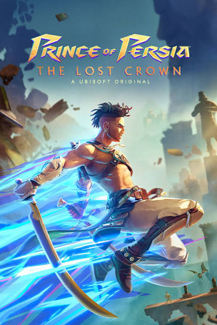

Yeni25 Eylül 2026
Resident Evil 4 Remake Türkçe Yama
RE4 Remake Türkçe yama dosyası ve kurulum notları.
Yamayı görüntüle →Aradığın oyunun Türkçe yamasını bul, detaylarını incele ve indirme sayfasına git.
RE4 Remake Türkçe yama dosyası ve kurulum notları.
Yamayı görüntüle →RE2 Remake için kurucusuz Türkçe yama ve kurulum anlatımı.
Yamayı görüntüle →Resident Evil Village için kurucusuz Türkçe yama.
Yamayı görüntüle →
Steam, Epic ve Game Pass desteği bulunan kurucusuz Türkçe yama dosyaları.
Yamayı görüntüle →
Türkçe karakter desteği ve doğrudan klasöre kopyalama yöntemiyle kurucusuz yama.
Yamayı görüntüle →Steam, Epic ve Game Pass için ayrı klasörleri bulunan küçük boyutlu kurucusuz yama.
Yamayı görüntüle →
Türkçe yama dosyaları, MediaFire indirme bağlantısı ve kurulum notları.
Yamayı görüntüle →
MediaFire indirme bağlantısı ve kurulum öncesi bilgiler.
Yamayı görüntüle →MindsEye için Türkçe yama. İndirme bağlantıları, kurulum ve VirusTotal kontrolü.
Yamayı görüntüle →Kurucusuz dosya sürümü. Dosya.co ve MediaFire indirme seçenekleri hazır.
Yamayı görüntüle →Aniimo için hazırlanmış Türkçe topluluk yaması. Kurulum, indirme bağlantıları ve sürüm bilgileri.
Yamayı görüntüle →Cuphead için hazırlanmış tam Türkçe yama. Kurucusuz paket ve kolay kurulum bilgileri.
Yamayı görüntüle →